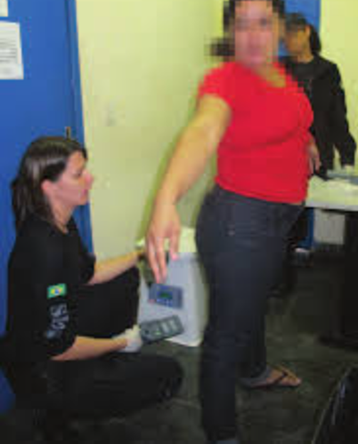

Description:
The so caled "FUNomenal" is the th level of the Backrooms and composed of infinite daycares with doors leading to each other. It lacks shades of black and gray and is little in white, but full of red, yellow, green and blue, with shades of orange, pink and purple making apearence sometimes. All of those infinite daycares look like a bithday party eather happened few time ago, is happening or is going to begin in few minutes, there being extreamly liminal ones, where no movement happens unless a wanderer coming from another level walks trough, and ones where partys are truely taking place. Water fountains can be found at the corners of the big rooms and the hallways, they dispense almond water and are evenly visited by one of this levels entitys, The Babysitters. Bottles of labeless refrigerators are very present on the main rooms' tables, but they contain even more sugar than those found at the Frontrooms, reason why drinking them uses to trigger tirtyness incrise insted of decrese. There are also lots of baby bottles on those tables, in wich is a strange substance, similar to hippo milk in apearence but brighter, similar to choco milk in taste but also very TONALIDADEdeURINA. But what most fill the tables are the brigadeiros and chocolate cakes found in this level, all brown and full of sugar to the point of causing tirstyness upon consumption. They have that uneasy taste that the sugar desguises, but have never triggered problams to anyone that has consumed them. Those brigadeiros and chocolate cakes smell like vanila and rose, like if almond water artificial flavors had been put in them.

The Children:
The most abundand and aimless entity found in this level, wich wanders around it with no predictable pattern or aperent goal, eventually reaching out to the party tables to get a candy or baby bottle. Their eyes are fainted bright brown, their words are unintelegeble and their saliva makes mess everywhere they go to. Apart from last, they are harmless.
Cafeteria Aunts:
The cafeteria aunts are aparent simulations of 80 yers old female humans, but have gray or light gray eyes and fused into an hourglass shape legs, with bone-made training wheels under their feet. They are found inside wandering vends and balconys scattered around the level, in those main party big rooms. The cafeteria aunts are very friendly and willing to distribute food to wanderes, who they kindly treat as kids while talking to them and aways offer to the candys displayed near them. The cafeteria aunts are who make all the eatble stuff found in this level, all the way from the almond water that is in the cooler machines to the great and sugar-full chocolate cakes displayed on the larger tables. They are baking them during the time's majority, but, when they are not doing so, displaying alredy done candys on tables, re-fulling coolers with almond water or serving entities and visitors who approach their counters or carts, the cafeteria aunts are in an unknown place they acces by no-cliping into walls humans cannot no-clip trough. Since they come back from those unknown places carrying suply boxes and put them inside their trucks or at the other side of their balconys, it is assumed it is where they purchase suplys to fufill the infinite demand of the unstopble child birthday partys. The main reason why many people do not belive the cafeteria aunts get 100% of what they use for baking candys from those places only they can no-clip into is because actual sweet dough has never been seen in the suply boxes they bring, only some "less important" compounents, like decoys and massive sugar boxes.
Babysitters:
The Babysitters found in this level might be that specific thing that realy gets on the nervs of the solitary wolfs, due to that tendency of them to ask the level's visitors if evrything is fine with them, checking if they are not doing anything that could get them hurt and never leave them unwached, but they never pose an actual thret: if punched or kicked violently, they just run away and cry for a few seconds in a far corner. Babysitters take similar aperences to 30 years old female humans, with very smooth skin, short, bright pink and sharpless nails and clothing that combines white and red or light blue features, the only non-human caracteristcs of their outside apearences are that they have an averange hight of two metters, some reports even claming to have seen trhee metters tall ones, and their eyes are ether orange, light blue or yellow. Not like a bright brown: actually orange, light blue or yellow. Babysitters are extreamly kind twords humans and aways going to use cute termologys upon talking to them, wich can also drive one insane depending on the person, but they are there to help with everything that is asked and guide humans trough this level. Upon asked about the level itself, Babysitters give the tipe of anser usually given by adults when a child asks about a thing they clarly cannot understand yet, usually trying to redirect their attention to another thing. They tend to do so by offering one of the nearby candys, and they also tend to offer those nearby candys to anybody. The level FUNomenal does not have any bathroom: only main big rooms, where the partys happen, a few classrooms, wich are aways empty, and hallways, trough wich the Children and Babysitters walk around. For this reason, people who fell the need of one find themselves in hard situations, as they tend not to fell confortable releasing themselves in front of the entitys found in this level, who are having their partys happly in the majority of the rooms, and try to find a way to another level while holding their needs in silence. When a wanderer begins acting "strangely" due to sad situation is when a Babysitter is very likely to aproach them and ask what is wrong. Given how many Babysitters wander around the entire level, it is a given that, at least, one is doing so if a person fells the needing of a bathroom. If the asked human anser truely, the asker Babysitter is going to ask them to follow her and guide them to the nearest hall turn or room door. When last is crossed by the cuple, it takes them to a small place with white tiled walls, light gray smooth concrete roof and unordered stone peaces floor that could not be entered any other way, with small light bulbs shining white light. There, the Babysitter is going to stack one of her hands into the wall and pull a plastic sack apently from the other side, proceding to ask the person to do their needs inside it. The entity removes and re-puts the person's clothes herself and holds the sack she pulled from the wall near their butt, like if she was helping a child to do something they havent learned how to do by themselves yet, and will realy act like if the human could not do it if they try to not follow her instructions. When the person is done releasing themself, the Babysitter, before putting their clothes back on them, is going to tie the mouth of the used bag and place it on the sink present in the small room, proceding to wipe the person's butt if needed. Once that is done, the Babysitter askes the person to follow her agin and guides them out of the small room trough the samedoor they used to enter it, wich desapears when they cross it inside out. The Babysitter carries the used sack in one of her hands, at the height of her hips, and takes it to the nearest feeding balcony. The strangest part comes now: the Babysitter gives the sack to a Cafeteria Aunt, who enters the unexessible parts with it. No body knows what happens with the wastes in there, all this level's entitys claim we do not need to worry about it when asked.
Entrances and Exists
Entrances
- Pooring a gray water cup into a Hermes device's bottle makes the device's brain dream about happy and colored partys and untrustble delicius cakes
- Tubes in level 283 might lead one here
- If a kid wall decoy made out of polystyrene is found in Barnaby's Bun Fun Emporium, a person can jump in its derection to no-clip here
Exists
- If a human acts sexualy and/or lewdly twords a Babysitter or Cafeteria Aunt, they call them "a bad boy" and claim they need to spend some time thinking about their actions. When that is done being sad, the person is teleported to a detention zone
- If a human REALLY refuses to let a Babysitter help them do their needs, to the point of making such a patient entity give up, she will sadly tell them this behavior will cause them to remain dirty. When that is done being sad, the person is teleported to a dirty place
- If a human removes a chalkboard from a classroom's wall and jumps into the part of the wall it was covering, they no-clip out of a chalkboard-made wall in level
- Peeing on a chocolate cake leads to level's thare are known for having waterfalls, like 178 and 27, but that needs to be done in front of all the entitys: some people have alredy taken cakes to empty classrooms and peed on them unseen, but were not teleported afterwords